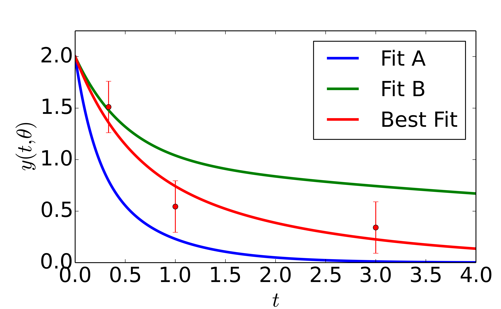

Parameter Identifiability and Sloppy Models
Parameter Identifiability
Identifiability Analysis considers the question of whether or not it is possible to infer (i.e., identify) the parameters of a model from data.
When parameters cannot be learned from data, we say they are unidentifiable.
There are two broad types of unidentifiabilities:
- Structural Unidentifability
- Practical Unidentifiability
Structural Identifiability
If parameters cannot be inferred from an infinite amount of perfect data, the model is structurally unidentifiable.
Structurally unidentifiablilities occur when the model makes the same predictions for more than one value of the parameters.
Example: Consider the linear model $y = \left(m_1 m_2 \right) x$.
There are an infinite number of ways to choose $m_1$ and $m_2$ without altering the predictions of the model.
There are an infinite number of ways to choose $m_1$ and $m_2$ without altering the predictions of the model.
Structural Identifiability
Example: $y = \left(m_1 m_2 \right) x$.
Although the parameter space is two-dimensional, the prediction space is one-dimensional.
In this case, the identifiability is removed by finding an identifiable combination: $m = m_1 m_2.$
This type of reparameterization is common in physics:
Although the parameter space is two-dimensional, the prediction space is one-dimensional.
In this case, the identifiability is removed by finding an identifiable combination: $m = m_1 m_2.$
This type of reparameterization is common in physics:
- Charge-mass ratio
- Equivalent resistance, capacitance, etc.
- Bohr radius
Structural Identifiability
Example: $y = e^{-\theta_1 t} + e^{-\theta_2 t}$
This model is also structurally unidentifiable: the model predictions are invariant to permutation of the parameters.
This structural unidentifiability is fundamentally different: both the parameter space and the prediction space are two dimensional. There is no identifiable combination.
The structural identifiability is removed by restricting the domain of the parameter space: $\theta_1 > \theta_2 > 0$.
This model is locally structurally identifiable, but not globally.
This model is also structurally unidentifiable: the model predictions are invariant to permutation of the parameters.
This structural unidentifiability is fundamentally different: both the parameter space and the prediction space are two dimensional. There is no identifiable combination.
The structural identifiability is removed by restricting the domain of the parameter space: $\theta_1 > \theta_2 > 0$.
This model is locally structurally identifiable, but not globally.
Structural Identifiability
Example: $y = A e^{-\theta_1 t}$
Poll: Is this model structurally identifiable?
For generic parameter values, this model is structurally identifiable.
However, there is a pathology when $A = 0$.
There is a breakdown of the manifold structure of the predictions.
However, there is a pathology when $A = 0$.
There is a breakdown of the manifold structure of the predictions.
Structural Identifiability
Although structural unidentifiabilities are caused by model pathologies, they are not always trivial to recognize.
Example: Hodgkin-Huxley Model
Example: Hodgkin-Huxley Model
The Hodgkin-Huxley model uses the following motif for each ion channel:
$ b_p e^{-(V - V_{bp})/K_{bp}}$
where $V$ is the voltage and $b_p$, $V_{bp}$ and $K_{bp}$ are parameters.
where $V$ is the voltage and $b_p$, $V_{bp}$ and $K_{bp}$ are parameters.
A little algebra reveals that there is an unidentifiable combinations:
\begin{align}
b_p e^{-(V - V_{bp})/K_{bp}} & = \left( b_p e^{V_{bp}/K_{bp}} \right) e^{-V/K_{bp}} \\
& = \tilde{b}_p e^{-V/K_{bp}}
\end{align}
Practical Identifiability
A model may be structurally identifiable, i.e., it is possible in principle to learn all of the parameters from data. But it may not be practical to do so.
For example, it may require an unreasonable amount of data.
To see how this comes about, we need to review statistics....
For example, it may require an unreasonable amount of data.
To see how this comes about, we need to review statistics....
Parameter Estimation
Definitions:
| \(D\) | Random Variable (data) |
| \(\theta\) | Parameter(s) |
| \(P(D|\theta)\) | Probability |
| \(\theta^*\) | "True" Parameters |
| \( \hat{\theta} \) | Parameter Estimate |
Problem:
Given observations of the data, \((d_1, d_2, d_3, \dots)\) infer from which values of the parameters, \( \theta^*\), they were generated, i.e., the "true" parameter values.
Estimator: Rule for calcaulating an estimate \(\hat{\theta}\) of \(\theta^*\) from data.
Example: Least Squares Regression
Suppose you measure an observable at distinct times \(t_i\) with measurement uncertainty \(\sigma_i\).
You also have a model of the time series that depends on several parameters: $ y(t, \theta) = e^{-\theta_1 t} + e^{-\theta_2 t} $

You also have a model of the time series that depends on several parameters: $ y(t, \theta) = e^{-\theta_1 t} + e^{-\theta_2 t} $
Define a "cost":
$ C(\theta) = \frac{1}{2} \sum_i \left( \frac{d_i - y(t_i, \theta)}{\sigma_i} \right)^2 = \frac{1}{2} \sum_i r_i^2 $
The least squares estimator (i.e., the best fit) is the parameter value(s) that minimize the cost.
The least squares estimator (i.e., the best fit) is the parameter value(s) that minimize the cost.
Maximum Likelihood Estimation
- The least squares estimator is an example of a Maximum Likelihood Estimate (MLE):
- Given observations of the data \(d = (d_1, d_2, d_3, \dots)\), the likelihood of it having been generated from \(P(D|\theta)\) is $$ \mathcal{L}(\theta; d) = P(d | \theta) $$ The MLE, $\theta^*$ maximizes $\mathcal{L}$.
- In practice, we usually minimize the negative log-likelihood: $l = \log \mathcal{L}.$
- If $d_i = y(t_i, \theta) + \sigma_i \xi_i$ where $\xi_i \in \mathcal{N}(0, 1)$, then the least squares estimator is the MLE.
Confidence/Credible Regions
- The data $d_i$ carry information about the parameters $\theta$ that were used to generate them.
- This information is incomplete and corrupted by noise.
- Goal: quantify this information.
- How sensitive is our estimator to the data?
- But the data came from the "true" parameter values.
- How sensitive is the model to the parameter values?

Transtrum, Mark K., et al. "Perspective: Sloppiness and emergent theories in physics, biology, and beyond." The Journal of chemical physics 143.1 (2015): 010901.
Score
- The score is a statistic that quantifies the sensitivity of the likelihood to changes in the parameters: $$V = \frac{\partial \mathcal{L}}{\partial \theta}$$
- The score is a random variable (it is a function of the data).
- Consider moments of the score.
- First moment: \begin{align} \langle V \rangle & = \langle \partial \mathcal{L} / \partial \theta \rangle \\ & = \sum_d P(d|\theta) \frac{\partial \log P(d|\theta)}{\partial \theta} \\ & = \sum_d P(d|\theta) \left( \frac{1}{P(d|\theta)} \frac{\partial P(d|\theta)}{\partial \theta} \right) \\ & = \frac{\partial}{\partial \theta} \sum_d P(d|\theta) = \frac{\partial}{\partial \theta} 1 \\ & = 0 \end{align}
Fisher Information
The second moment of the score is generally not zero.
It is known as the Fisher Information Matrix (FIM), $\mathcal{I}$: \begin{align} \mathcal{I}_{\mu\nu} & = \langle V^2 \rangle \\ & = \left\langle \frac{\partial \mathcal{L}}{\partial \theta_\mu} \frac{\partial \mathcal{L}}{\partial \theta_\nu} \right\rangle \\ & = - \left\langle \frac{\partial^2 \mathcal{L}}{\partial \theta_\mu \partial \theta_\nu} \right\rangle \end{align}
Exerise: Prove the last equality.
It is known as the Fisher Information Matrix (FIM), $\mathcal{I}$: \begin{align} \mathcal{I}_{\mu\nu} & = \langle V^2 \rangle \\ & = \left\langle \frac{\partial \mathcal{L}}{\partial \theta_\mu} \frac{\partial \mathcal{L}}{\partial \theta_\nu} \right\rangle \\ & = - \left\langle \frac{\partial^2 \mathcal{L}}{\partial \theta_\mu \partial \theta_\nu} \right\rangle \end{align}
Exerise: Prove the last equality.
FIM and Least Squares
- Recall the residuals $r_i(\theta) = \frac{d_i - y_i(\theta)}{\sigma_i}$, $ C(\theta) = \frac{1}{2} \sum_i r_i(\theta)^2$
- By construction, $r_i(\theta) \in \mathcal{N}(0,1)$
- $l(\theta) = -C(\theta) + \textrm{constant}$
Eigenvalues/Eigenvectors of $\mathcal{I}$ (Hessian) characterize the ellipses of the cost surface around the best fit:
FIM and Cramer-Rao Bound
The Cramer-Rao bound places a lower bound on the covariance of the estimated parameter values.
\begin{align}
Cov \left(\hat{\theta} \right ) & = \frac{1}{n} \mathcal{I}^{-1}
\end{align}
FIM and Relative Entropy
Given two probability distributions that are infinitesimally separated $Q(D|\theta) = P(D|\theta + d \theta)$, then the Kullback-Leibler divergence is (to lowest order) the Fisher Information:
\begin{align}
D_{KL}(P;Q) = d \theta^T \mathcal{I} \, d \theta
\end{align}
Is the FIM fundamental?
FIM and Structural Identifiability
Theorem:* A model is locally structurally identifiable at $\theta_0$ if and only if $\mathcal{I}(\theta_0)$ is non-singular.
In other words, if $\mathcal{I}$ is non-singular, then the manifold of predictions locally has the same dimensionality as the parameter space.
More generally, the dimensionality of the null-space of $\mathcal{I}$ is the number of identifiable combinations that need to be constructed to give an identifiable model.
In other words, if $\mathcal{I}$ is non-singular, then the manifold of predictions locally has the same dimensionality as the parameter space.
More generally, the dimensionality of the null-space of $\mathcal{I}$ is the number of identifiable combinations that need to be constructed to give an identifiable model.
*Rothenberg, Thomas J. "Identification in parametric models." Econometrica: Journal of the Econometric Society (1971): 577-591.
FIM and Practical Identifiability
If $\mathcal{I}$ has a zero eigenvalue, the the model is structurally unidentifiable.
A natural (possible) extension: If $\mathcal{I}$ has small eigenvalues, then the model is practically unidentifiable.
Cramer-Rao bound: it would take a lot of data to constrain the parameter combinations with projections along the smallest eigendirection.
This way of thinking about practical identifiability is useful, but ultimately incorrect.
A natural (possible) extension: If $\mathcal{I}$ has small eigenvalues, then the model is practically unidentifiable.
Cramer-Rao bound: it would take a lot of data to constrain the parameter combinations with projections along the smallest eigendirection.
This way of thinking about practical identifiability is useful, but ultimately incorrect.
Sloppiness
What happens if you have lots of parameters?
Case study: Epidermal Growth Factor Receptor (EGFR) Signaling*
Case study: Epidermal Growth Factor Receptor (EGFR) Signaling*
- 48 Parameters, 68 Data points
- No parameters estimated accurately
- Falsifiable predictions (Predictions without parameters!)


*Brown, Kevin S., et al. "The statistical mechanics of complex signaling networks: nerve growth factor signaling." Physical biology 1.3 (2004): 184.
Sloppiness and the FIM
The Eigenvalues of the FIM for the EGFR model showed an unusual structure:
- Eigenvalues are uniformly distributed on a log-scale over many decades.
- Usually many small eigenvalues
- No clear distinction between important/unimportant parameter combinations
- Eigenvectors skewed relative to bare parameters.
- Most parameters have projections along sloppy directions.
- No bare parameters can be inferred accurately.
- This structure recurred universally in models from many fields.
Machta, Benjamin B., et al. "Parameter space compression underlies emergent theories and predictive models." Science 342.6158 (2013): 604-607.
Defining Sloppiness?
Some common approaches:
- Range of eigenvalues?
- Distribution of eigenvalues?
- Identifiability rediscovered?
The FIM eigenvalues are an indication of something deeper:
- Predictions without parameters
- Effective theories
- Universality
White, Andrew, et al. "The Limitations of Model-Based Experimental Design and Parameter Estimation in Sloppy Systems." PLoS Computational Biology, l 12(12): e1005227 (2016).